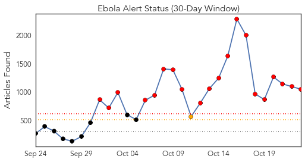
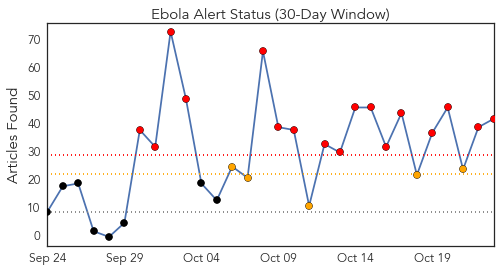
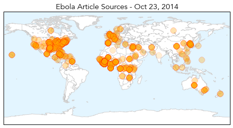
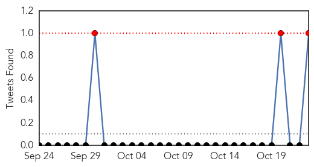
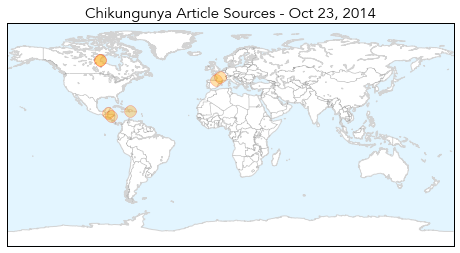

Ebola
30-Day Web Trend
20 alerts, 1 warnings

30-Day Twitter Trend
8 alerts, 8 warnings

Article Locations
Article Confidences
Top Articles:
- 1.000
- Family Says Nurse Amber Vinson Is Free Of Ebola
- 1.000
- Family Says Nurse Amber Vinson Is Free Of Ebola
- 1.000
- A Politically Incorrect Approach
- 1.000
- Doctor who worked in Africa first Ebola case in NYC
- 1.000
- Understanding Ebola
- 1.000
- American doctor tests positive for Ebola
- 1.000
- American doctor tests positive for Ebola
- 1.000
- Ebola death toll edging to 4,900 mark: WHO
- 1.000
- NunatsiaqOnline 2014-10-23: NEWS: Nunavik to follow Quebec’s response plan for Ebola virus
- 1.000
- Family Says Nurse Amber Vinson Is Free Of Ebola : The Two-Way : NPR
- 1.000
- Ebola Panic Proving To Be Overblown
- 1.000
- Health Department Says Ebola Isn’t a Threat in Shelby County
- 1.000
- U.S. Cameraman Treated for Ebola 'Free' of the Virus
- 1.000
- The 9 Deadliest Viruses on Earth
- 1.000
- North Korea 'to close its borders to tourists' due to concerns over the spread of Ebola
- 1.000
- Ebola outbreak: Quarantine camps in West Africa at breaking-point
- 1.000
- How Many People Have Really Died From Virus?
- 1.000
- Doctor tests positive for Ebola in New York City
- 1.000
- Your Ebola Questions, Answered
- 1.000
- Everything You Need To Know About Ebola
- 1.000
- Latest Updates N.Y.C. Says Hospital Testing Doctor With Ebola-like Symptoms
- 1.000
- Doctor who worked in Africa first Ebola case in NYC
- 1.000
- Ebola hits Mali for first time as girl, 2, tests positive for disease
- 1.000
- Doctor who worked in Africa first Ebola case in NYC
- 1.000
- Ebola latest: Amber Vinson improves as patients avoid Dallas hospital
- 1.000
- Ebola Today: NYC Doctor Tests Positive for Ebola
- 1.000
- Dallas Nurses Infected With Ebola Are Improving
- 1.000
- Local facilities say they're prepared for Ebola
- 1.000
- Family Says Nurse Amber Vinson Is Free Of Ebola
- 1.000
- Family Says Nurse Amber Vinson Is Free Of Ebola
- 1.000
- Calm down, it’s just Ebola
- 1.000
- Mayor Announces City is Prepared for Ebola :: Stamford, CT
- 1.000
- Family Says Nurse Amber Vinson Is Free Of Ebola
- 1.000
- Latest Developments In The Ebola Story
- 1.000
- Family Says Nurse Amber Vinson Is Free Of Ebola
- 1.000
- Ebola Nurse Amber Vinson Now ‘Free’ of Virus, Family Says
- 1.000
- Radnor police will be prepared for unlikely Ebola outbreak
- 1.000
- Family Says Nurse Amber Vinson Is Free Of Ebola
- 1.000
- Family Says Nurse Amber Vinson Is Free Of Ebola
- 1.000
- CHRONOLOGY-Worst Ebola outbreak on record tests global response
- 1.000
- First case of Ebola confirmed in Mali: Health Ministry
- 1.000
- Family Says Nurse Amber Vinson Is Free Of Ebola
- 1.000
- Family Says Nurse Amber Vinson Is Free Of Ebola
- 1.000
- WHO holds two-day emergency meeting on Ebola
- 1.000
- Ebola Outbreak: Ways to help
- 1.000
- Risks and Realities
- 1.000
- Family Says Nurse Amber Vinson Is Free Of Ebola
- 1.000
- CHRONOLOGY-Worst Ebola outbreak on record tests global response
- 1.000
- 5-year-old at Bellevue leaving isolation
- 1.000
- 5-year-old at Bellevue leaving isolation
Showing top 50 articles...
Top Tweets:
- 0.991
- Sierra Leone hasn't stopped spread of Ebola. Still engulfed in the outbreak.
- 0.985
- RT: Dr Fukuda: Ebola remains a public health emergency of intl concern: WHO Intl Health Regulations Emergency Committee on Ebola in W…
- 0.930
- .@WHO says Ebola outbreak continues to spread in West Africa http://t.co/7BBc7m3cNP
- 0.920
- Interesting! German MDs who treated an medevac'd Ebola patient tested body fluids for virus after he stopped having virus in his blood 1/2
- 0.884
- Our next EbolaFact: A person infected with Ebola virus is not contagious until symptoms appear. http://t.co/MQUpd0zRC4
- 0.881
- $10,000 compensation to be paid to families of health workers who died in Ebola treatment centres in Guinea - govt Ebola chief.
- 0.880
- Ebola threatens Liberian food security; Summary of Ebola candidate vaccines. HealthSecurity http://t.co/H1JhGDbj22
- 0.844
- RT: First case of Ebola confirmed in Mali: health minister
- 0.833
- Borders aren't force fields. Until Ebola is contained in Guinea, Liberia & Sierra Leone,the virus will find its way to other countries.
- 0.827
- Francophone medical personnel needed: @WHO says French-speaking medical staff needed to help fight Ebola in Guinea.
- 0.819
- RT: ECDC guide on assessing & planning medical air evacuations to Europe for Ebola patients & people exposed to Ebola http://t.co…
- 0.814
- RT: Dr Fukuda: Ebola cases continue to increase exponentially in Guinea, Liberia, and Sierra Leone; the situation remains of great co…
- 0.814
- RT: Dr Fukuda: Ebola cases continue to increase exponentially in Guinea, Liberia, and Sierra Leone; the situation remains of great co…
- 0.814
- RT: Borders aren't force fields. Until Ebola is contained in Guinea, Liberia & Sierra Leone,the virus will find its way to…
- 0.790
- Need vs Reality: Liberia needs 2690 Ebola treatment beds, has 620 (23%). Sierra Leone needs 1198, has 346 (29%) Guinea needs 260, has 160.
- 0.776
- The dog in Dallas has tested negative for Ebola.
- 0.771
- Dallas nurse Amber Vinson free of Ebola virus http://t.co/p3Zh8XxZUW
- 0.757
- Sierra Leone: @UNBanbury & @UNMEER Sierra Leone Ebola Crisis Manager Amadu Kamara brief the press on EbolaResponse http://t.co/wtrjc2X8bB
- 0.756
- Could it be Ebola? New for healthcare workers: patient care checklist for patients under investigation for Ebola: http://t.co/gBFhKhPoRu
- 0.748
- 2/3 Man shed viable virus in urine up to 9 days after Ebola had cleared from his blood. PCR testing showed virus in sweat until day 40
- 0.738
- AFD Blog `@ECDC_EU: Management Of Contacts Of Ebola Virus Disease Cases In The EU' http://t.co/2WhBBWnj46
- 0.719
- RT: The best way to protect Americans from Ebola is to stop the outbreak in West Africa. http://t.co/NW1D0ugFIB CDCchat
- 0.718
- RT: Could it be Ebola? New for healthcare workers: patient care checklist for patients under investigation for Ebola: http://t.co/…
- 0.707
- RT: spread of Ebola remains "exponential" in Liberia/Guinea/Sierra Leone, says Keiji Fukuda, WHO Assistant Director, at pre…
- 0.685
- U.S. to Monitor Travelers From Ebola-Hit Nations for 21 Days http://t.co/hj4hqcTtQj
- 0.680
- Currently there has been no report of dog to human transmission or showing symptoms of Ebola
- 0.680
- Currently there has been no report of dog to human transmission or showing symptoms of Ebola
- 0.674
- RT: Women are on the frontlines in Liberia providing care & working to change deadly course of Ebola outbreak http://t.c…
- 0.641
- .@WHO 's Keiji Fukuda say Emergency Committee was struck by how few Ebola exported cases have been seen up till now.
- 0.628
- A Possible Ebola Outbreak in New York Follow for updates http://t.co/F3BUahSY3R
- 0.616
- Ebola en Guinée: l'ancien PM Cellou Dalein Diallo appelle à l'assistance technique http://t.co/gU02ShXdWg
- 0.609
- RT: Ebola response teams in West Africa are depending on you to help map the region: http://t.co/4aNPPJuAyW by
- 0.601
- Our next EbolaFact is about whether a person can spread Ebola without symptoms. http://t.co/N4DISIoo2G
- 0.598
- .@WHO emergency committee says countries hosting mass gatherings/meetings should not bar people from Ebola affected nations from attending.
- 0.596
- Nightmarish RT: @Crof: Ebola in Liberia: Crematorium paralyzes Boystown http://t.co/h586hkk7iy
- 0.595
- Health workers, do you know when to think Ebola, evaluate the patient & consult w/public health? New fact sheet: http://t.co/gBFhKhPoRu
- 0.593
- Signs of Ebola incl fever, headache, muscle pain, diarrhea, vomiting, stomach pain, or unexplained bleeding.
- 0.583
- RT: Barack Obama appelle à plus « d’engagements fermes » pour lutter contre le virus Ebola. Lire la suite: http://t.co/8K…
- 0.563
- RT: Health workers, do you know when to think Ebola, evaluate the patient & consult w/public health? New fact sheet: http://t.co/g…
- 0.561
- The person NYC is evaluating for Ebola is a healthcare worker who recently returned one of the 3 affected countries. hopeitsmalaria
- 0.545
- RT: Dr. David Spencer of admitted 2 Bellevue in NYC 2day, poss Ebola. Recently home frm Guinea. Had self-isolatd…
- 0.521
- What's behind the drop in Ebola cases in Liberia? @itsjina reports for http://t.co/coqOvzGzxf
Chikungunya
30-Day Web Trend
0 alerts, 1 warnings

30-Day Twitter Trend
1 alerts, 0 warnings

Article Locations
Article Confidences
Top Articles:
- 0.999
- One new imported chikungunya case
- 0.996
- Canada reports 201 cases of CHIKV
- 0.995
- Health Canada: 200 chikungunya cases reported
- 0.994
- France reports 1st locally acquired chikungunya cases in 4 years
- 0.986
- Mosquito Borne Chikungunya Virus Has Infected More Than 200 Canadians
- 0.984
- Chikungunya – France
- 0.947
- 7 News Belize
Top Tweets:
- 0.686
- RT: el Karma también se viste de Chikungunya